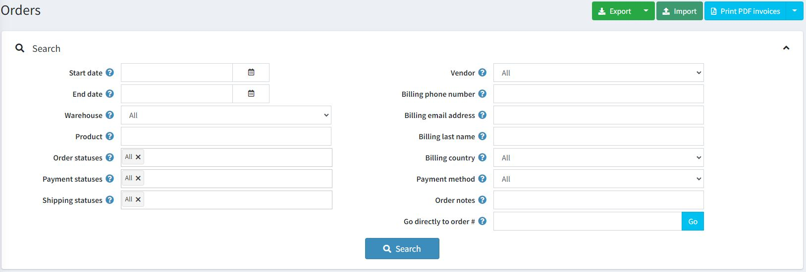
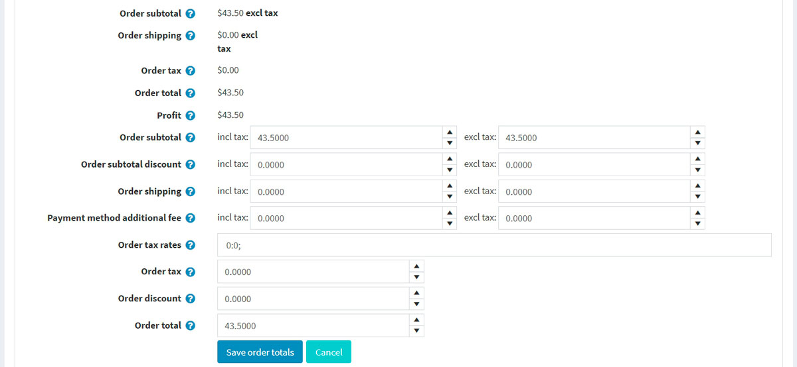
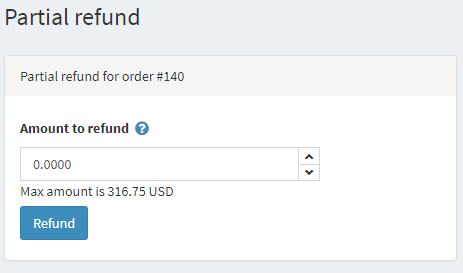
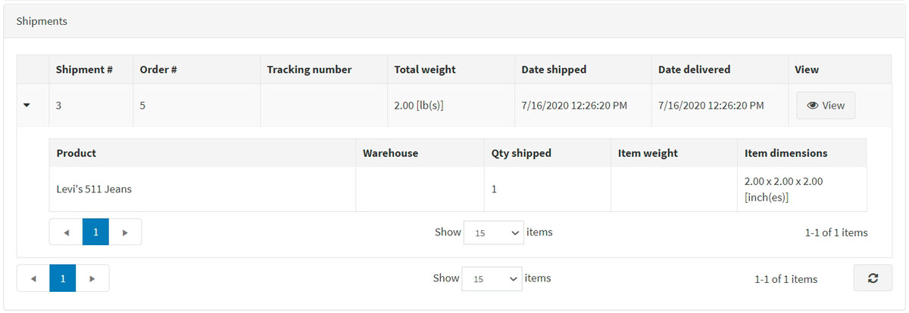
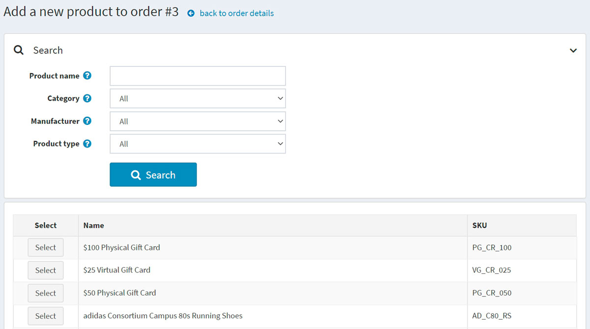
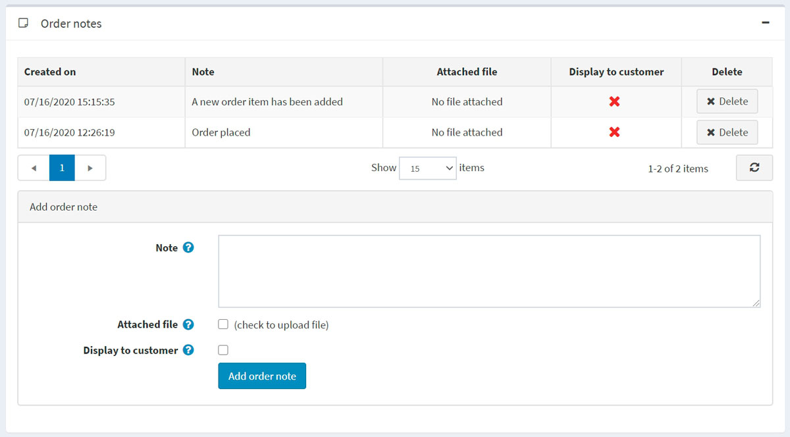

Orders
To view and manage orders, go to Sales → Orders. The orders page lists all current orders. After a customer completes a transaction, a new order appears on the orders page.
The top area of the page enables a store owner to search for orders. Enter specific search criteria and use a variety of filters to find any order placed in the store. Whenever a search is completed, the results of the search will be displayed in the lower half of the screen. You can click View to view the order details.

Search for orders
To search for orders, enter one or more of the following search criteria:
- Start date and End date to define a period of orders' creation.
- Warehouse to load orders with products from a specified warehouse.
- Product — enter a product name
- Order statuses – select one of the following: All, Pending, Processing, Complete, Cancelled.
- Payment statuses — select a specific payment status to search by: All, Pending, Authorized, Paid, Partially refunded, Refunded, Voided.
- Shipping statuses — select a specific shipping status to search by: All, Shipping not required, Not yet shipped, Partially shipped, Shipped, Delivered.
- Store — set a specific store in which orders were placed.
- Vendor — search by a specific vendor. You'll see orders with products by a specified vendor.
- Billing phone number — customer's phone number.
- Billing email address — customer's email address.
- Billing last name — customer's last name.
- Billing country — customer's country.
- Payment method — set a specific payment method that was used during checkout.
- Order notes — search in order notes. Leave empty to load all orders.
- Go directly to order # — enter the order number and click Go to display the required order.
Export orders
You can export orders to an external file by clicking the Export button at the top of the page. After clicking the Export button, you will see the dropdown menu enabling you to Export to XML (all found) or Export to XML (selected) and Export to Excel (all found) or Export to Excel (selected).
Import orders
You can import orders from Excel by clicking the Import, choose the file, and click the Import from Excel button. Imported orders are distinguished by order GUID. If the order GUID already exists, then its details will be updated.
Warning
Import requires a lot of memory resources. That's why it's not recommended to import more than 500 - 1,000 records at once. If you have more records, it's better to split them to multiple Excel files and import separately.
Order details
To view the full order information, click View beside the order in the list.
Click the Invoice (PDF) button in the top right corner to generate an invoice for the order in PDF. Click Delete if you want to delete the order.
Info
In the Info panel, a store owner can perform the following:
- View the Order #, which is a unique order number.
- View the Created on — the date/time the order was placed/created.
- View the Customer who placed the order.
- View the Order status. The order status will only be Completed when the payment status is set to Paid and the shipping status is set to Delivered. The order status can be changed manually by clicking the Change status button. However, this option is only recommended for advanced users because all appropriate actions (such as inventory adjustment, sending notification emails, reward points, gift card activation/deactivation) must be performed manually in this case.
- Cancel order. A confirmation message will be displayed; click Yes to remove the order from the system.
Note
When a customer uses the Manual Credit Card payment method, which enables storing credit card information in the database, the Edit credit card button becomes visible. If a different payment method is used, this button will not be visible.
View the Order subtotal, Order shipping, Order tax, Order total, Profit. If you click the Edit order totals button, you will be able to edit the order totals as on the screenshot below: 
View the Payment method used for this order.
View the Payment status. Can be one of the following: Pending, Authorized, Paid (captured), Refunded, Partially refunded, or Voided.
Note
Not all of the payment gateways support all of these statuses. Read more about payment methods in the Payment methods chapter.
If the payment status is Authorized, the relevant buttons will be available to Void and Capture the order. Capture is used to collect the funds from the customer. Void cancels an order that has not been captured.
If the payment status is Pending, the owner can click Mark as paid to indicate the payment has been issued for the order.
If the payment status is Paid, the Refund and Partial refund buttons will be available. After clicking Refund, a confirmation window will be displayed. After clicking the Partial refund button, the Partial refund window will be displayed. This window enables the owner to refund part of the total order as follows:

- View the Store in which this order was placed.
- View the Order GUID displayed for internal usage.
- View the Customer IP address, which a customer used when placing the order.
Billing & shipping
In the Billing & shipping panel, view and edit the billing and shipping information if needed.
- View the Billing address and Shipping address. Optionally, you can click the View address on Google maps link to locate the required shipping address. Click the Edit button in order to edit the billing or shipping address.
- View and edit the Shipping method if needed.
- View the Shipping status.
Note
Store owners can create several shipments per order. If you create a shipment but do not ship all products, then the shipping status of the order will be Partially shipped. Once all the products are shipped, the status changes to Shipped. Once all the shipments are delivered, the status changes to Delivered.
- View the list of Shipments.

Click View beside the shipment to view its details. The shipment information window will be displayed:

Add shipment button enables creating several shipments per order and is visible when there is at least one unshipped product in the order. Click Add shipment button to add a new shipment to the order, and you will see the Add a new shipment to order window:

- In the Tracking number field, enter the tracking number of the shipment. A tracking number enables your customers and you to check up on the progress of a shipment via telephone or online system operated by your shipping agent (post office or a private courier service, such as FedEx or UPS). Whenever a shipment passes certain points along its route, it will be identified by the shipping agent's system, and the tracking database will be updated with the new location and time information.
- Fill the Admin comment field if needed.
- Select the Shipped checkbox to mark the shipment as shipped using the current date.
- If the previous checkbox is selected, the Delivered checkbox will be available. Select this checkbox to mark the shipment as delivered using the current date.
- In the Products shipped panel: in the Qty to ship column, enter the required quantity of the specific order item to ship.
Products
In the Products panel, a store owner can:
- View the product information, including price, quantity, and total price.
- Click the Product name link to view a product details page. If the product is downloadable, click Reset to reset the number of downloads or Upload license file. In addition, when the Download activation type of a product is set to Manually, the administrator has the option to click Activate to enable downloading the product from the site or Deactivate to disable downloading the product from the site.
- Edit the product's Price, Quantity, Discount, and Total.
- Delete a product from the system.

- Click Add product. Select the product from the list. Then, in the Add a new product to order window, find the required product. Then proceed to fill the required values and click Add product. Do not forget to update order totals after adding a new product to the order. 
Order notes
In the Order notes panel, a store owner can view the notes that were added to the order for information purposes, delete notes, and add new ones. A note may contain an Attached file and can be Displayed to a customer in the public store. 